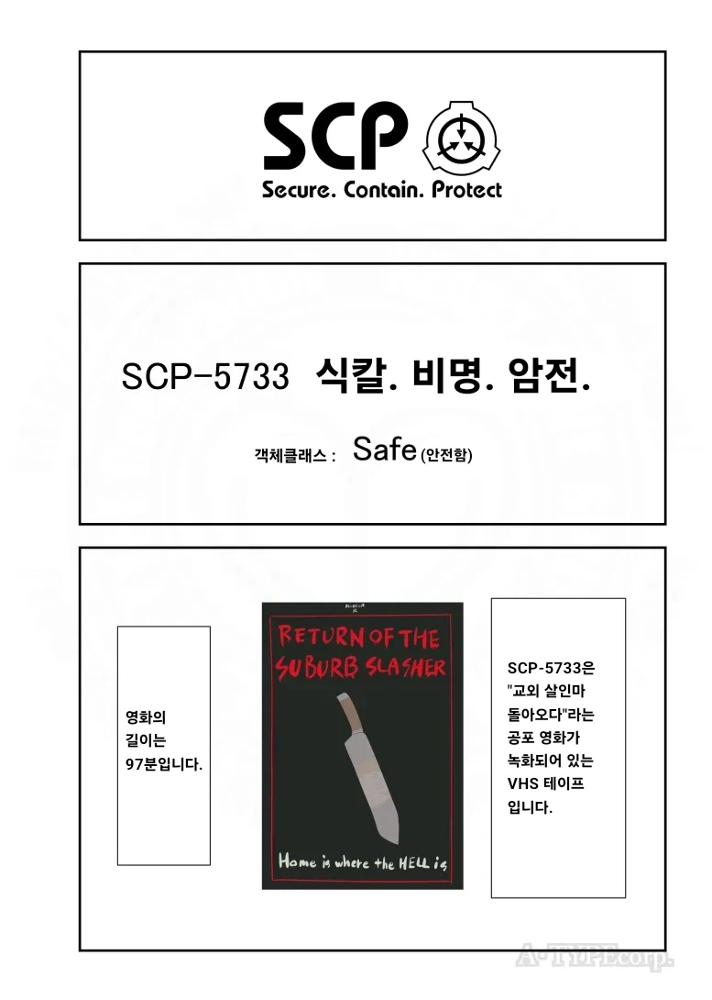
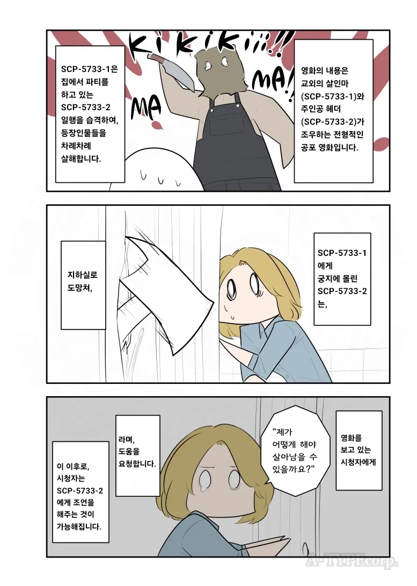
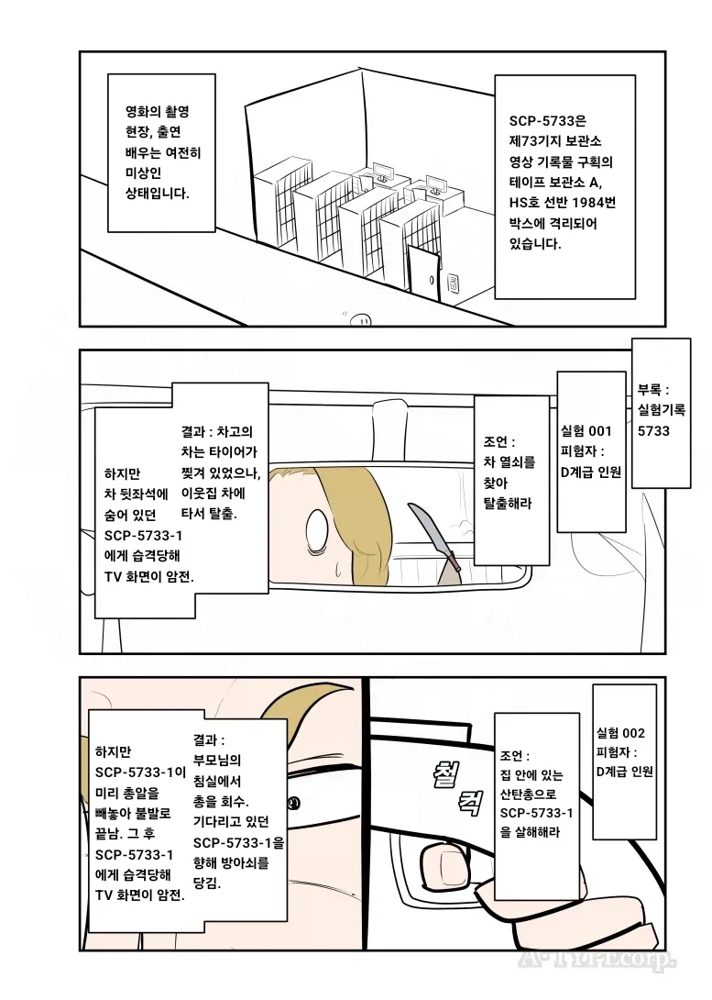
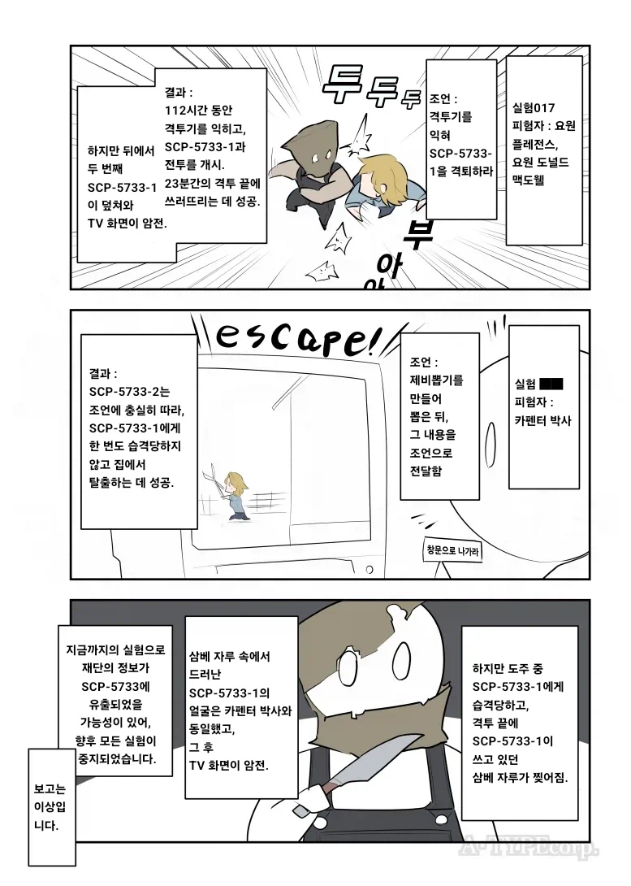

이거 그림이 졸귀야
갑자기 112시간 단련 뭔데
그래서 뭔소린데 결국 조언해주는 사람이 살인자인거임?
피해자를 돕게 하는 건 미끼고 재단과의 소통을 통해 학습하고 있었다는 거 아녀?
메타적으로는 뒤질걸 알면서도 계속 실험을 계속하는 니새끼는 살인자라는 풍자적 의미고
작품적으로는 살인마가 조언해주는 사람의 분신같은걸로 설정되는 메타몽같은거겠지
그래서 다른건 조언을 해도 살인마가 조언자(본인)의 사고 패턴을 알아서 그 조언을 역이용할 수 있었는데
랜덤뽑기는 운빨이었으니 탈출한거고
저세계는 논리적으로 말이 안되는물건들이 있는 세계라서. 상호작용이 되는 비디오테이프부터 말이 안되니까.
비디오테이프가 '니 내가 지켜보고있다' 고 말하고있는걸로 이해해도 됨.
일본만화식 오른쪽에서 왼쪽읽기
왜냐면 일본만화니까...
맛있네
뒤질뻔했네